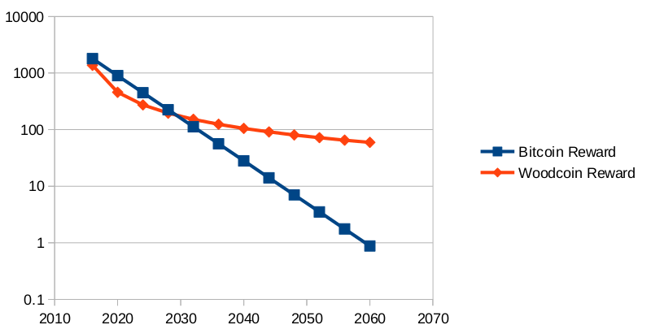

& Wood Enough For All
Woodcoin is a public digital currency which uses Pure Skein. Its unit of exchange is LOG. It is similar to other cryptocurrencies, but has key differences. Woodcoin was invented by Funkenstein the Dwarf in October 2014. Funkenstein the Dwarf does not exist.
- Woodcoin’s harmonic distribution is designed to more closely model renewable resources than nonrenewable ones. This means that while it is always better to chop LOGs today, there will still be incentive to chop tomorrow.
- The logarithmic money supply curve is designed for stability and longevity, with the longest reward schedule of any other cryptocurrency.
- It also features novel coin design in proof of work function (Pure Skein) and in digital signature keypairs (X9_62_prime256v1).

Here is a plot of the Daily rewards comparing BTC released per day to LOG released per day for the next 45 years. For more on the economics of a logarithmically increasing money supply, read the whitepaper.